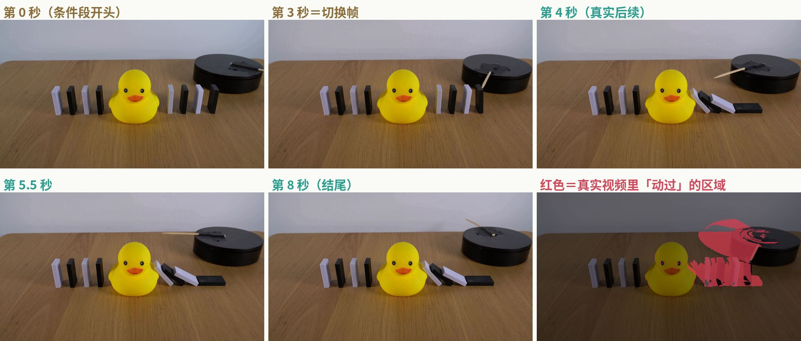
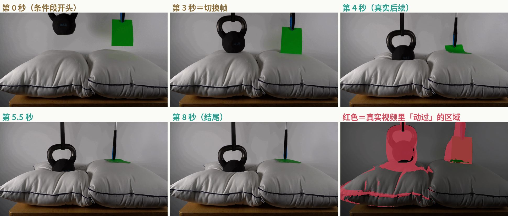
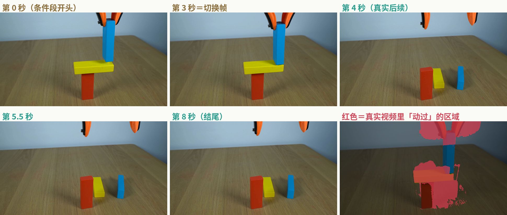
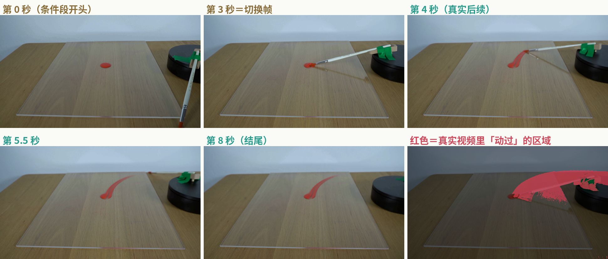
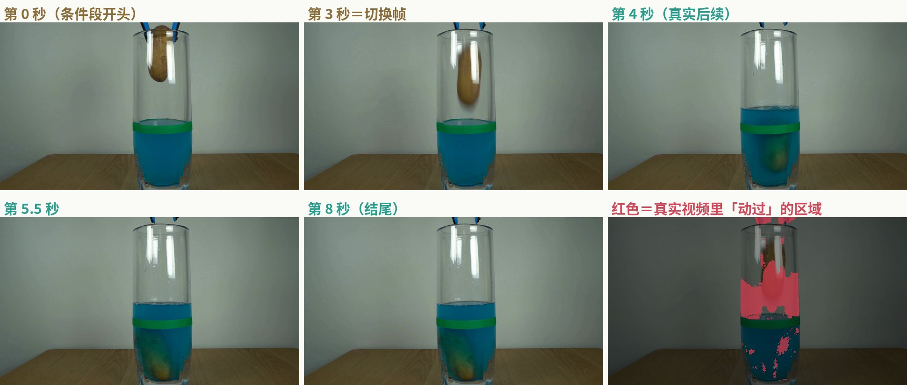
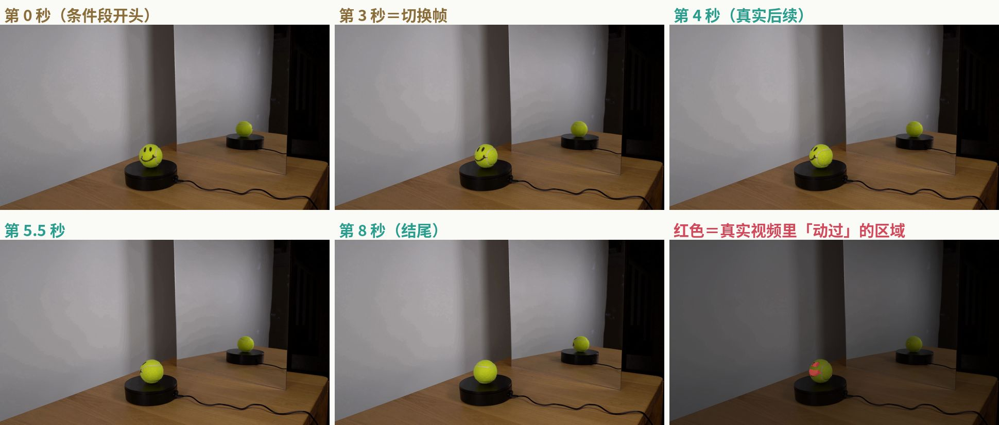
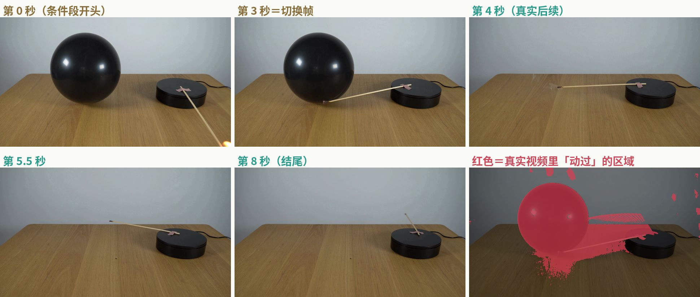
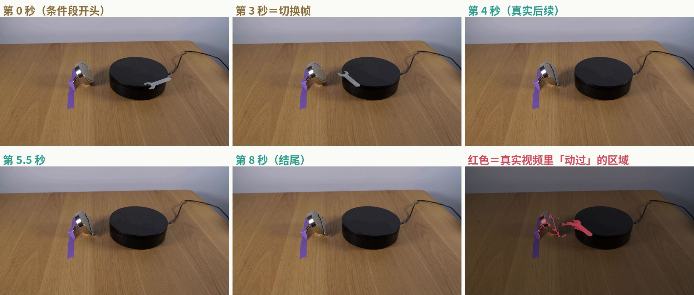
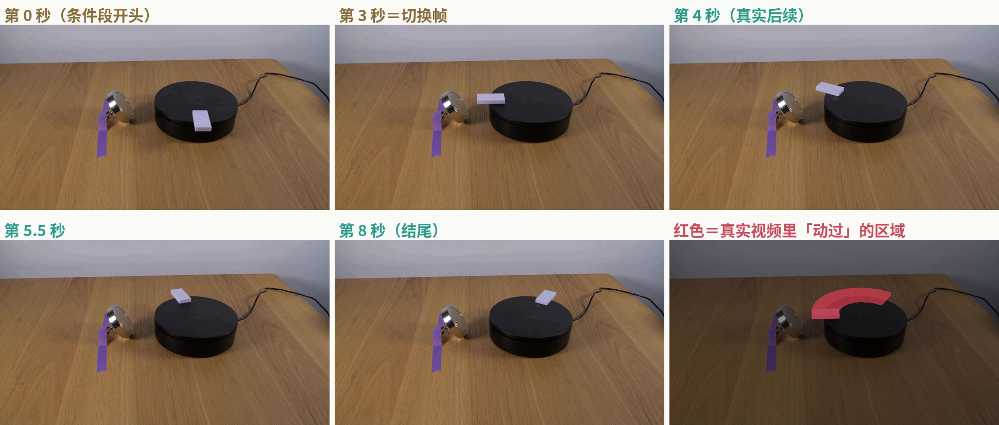

Physics-IQ 怎么打榜？Odyssey 的 66.1 算不算第一？
Physics-IQ 是 Google DeepMind 做的「视频模型懂不懂物理」评测，现在推荐用的是 Anates Labs 牵头修订的 Verified 版。榜单数据取自 官网（2026-10-09 抓取）和 GitHub README。
66 个真实桌面物理实验（骨牌、积木、倒水、镜子、磁铁……），3 个机位共 198 段。给模型看前 3 秒视频（V2V）或1 帧（I2V），让它续写 5 秒，和真实录像逐像素比「哪里动、何时动、动多少」。
是 V2V 赛道第一，但：每题生成 8 个挑 1 个、大模型改写提示词、只跑 1 轮没有标准差（官方要求宣称 SOTA 要有 4 轮标准差）。不挑的话是 63.37，也还是 V2V 单次生成第一。
「默认榜 FLUX 3 第一 64.36、Odyssey 第二 61.78」看错了榜：官网默认开的是图片续写 I2V，这两个数是 I2V 的子指标。I2V 单次生成确实是 FLUX 3 第一（51.11）、Odyssey-3 Pro 第二（49.99）。
自己生成、跑官方代码 → GitHub 联系 → 上传视频，不交权重、不开 API、没看到收费，主办方重算。模型要能「续写 5 秒 + 镜头不动 + 不需要动作」。白模不能参赛，能补固体力学训练数据（占 58% 的题），但测试全是真实录像，有画面落差。
跳到：66.1 怎么回事 · 全部榜单 · 9 道原题（带视频） · 怎么上榜 · 我们能不能打 · 和 WBench 比
Odyssey 的 66.1 到底算不算第一
算第一，但要加限定词：V2V 赛道、best-of-8、自定义提示词、单轮。
| 问题 | 查到的事实 | 来源 |
|---|---|---|
| 66.1 是哪个榜？ | Physics-IQ Verified，视频续写（V2V）赛道，Verified 分 | 官网数据、README、PR #90 |
| 怎么跑的？ | 每道题用 8 个随机种子生成 8 个候选，再用两个不看真值的打分挑一个：V-JEPA 2 的「意外程度」（WMReward）和 8 个候选之间的相似度共识（MBR），两个排名相加最小的那个提交 | PR #90 |
| 提示词？ | 在官方基础提示词后面，加了一段用外部大模型（Fable 5.1）按每个视角改写的「结果描述」。PR 说改写时只看了条件视频或首帧，没看真实后续 | PR #90 |
| 跑了几轮？ | 1 轮，没有标准差。4 轮取平均的只有不挑的版本：63.37 ± 0.63 | PR #90 |
| 符合规则吗？ | 官方规则：上榜跑 1 轮就行；要宣称 SOTA 必须报 4 轮的标准差。66.1 没有标准差 | README Rules 第 1 条 |
| 谁算的分？ | Odyssey 自己用官方代码（commit 4ddba5a1）在 16 fps 下跑的。提交条款写的是主办方会自己重算；但 PR 里 Pro 版的 4 个上传编号写着「待发放」，我查不到主办方重算的结果 | PR #90、提交条款第 8 条 |
| 主办方认吗？ | PR 2026-10-08 被合并，README 给它标了 🥇 v2v。DeepMind 的 Robert Geirhos 留言「congrats on the results」 | PR #90 |
| 模型公开吗？ | 不公开（私有），所以 README 里的「reported here」链接指向这个 PR | PR #90 |
同一赛道里谁在它后面（V2V，Verified 分，官网「Leaderboard」列表）：
| 排名 | 模型 | 分数 | 怎么生成 |
|---|---|---|---|
| 1 | Odyssey-3 Pro（Odyssey） | 66.10（单轮，无标准差） | best-of-8，按排名相加挑选 |
| 2 | Odyssey-3（Odyssey） | 64.43（单轮，无标准差） | best-of-8，按排名相加挑选 |
| 3 | FLUX 3 [large]（Black Forest Labs） | 64.35 ± 0.22 | best-of-8，用 WMReward 加共识挑选 |
| 4 | Odyssey-3 Pro | 63.37 ± 0.63 | 单次生成，大模型改写提示词 |
| 5 | Odyssey-3 | 61.56 ± 1.20 | 单次生成，大模型改写提示词 |
| 6 | FLUX 3 [large] | 61.11 ± 0.55 | 单次生成，自定义改写提示词（README 写的是用 Claude Opus 5.5 写的） |
| 7 | Odyssey-3 | 51.76 ± 0.69 | 单次生成，官方基础提示词，不改写 |
| 8 | Cosmos3 Super（NVIDIA，开源） | 50.8 ± 2.2 | 单次生成 |
| 9 | Cosmos3 Nano（NVIDIA，开源） | 43.0 ± 2.0 | 单次生成 |
切到官网的「All」列表，还会多出微软亚洲研究院的两条（还没发布的模型）：Physical Registry + PRS 52.61（BoN×4），Physical Registry 50.17 ± 0.72。
要注意的三点：
- 差距很小：66.10 比 FLUX 3 的 64.35 高 1.75 分，但 FLUX 3 那条有 4 轮标准差（± 0.22），Odyssey 这条没有，没法判断这 1.75 分有多稳。
- 提示词影响巨大：同一个 Odyssey-3，用官方基础提示词是 51.76，换成大模型改写的是 61.56，差了将近 10 分。也就是说，榜上前几名之间的差距，有相当一部分来自提示词工程，不全是模型本身。
- 成本差很多（按 PR 和官网的报价）：Odyssey-3 Pro 的 V2V best-of-8，生成成本约 $2.316/条（按每 GPU 小时 $1 算，不含挑选时的算力）；FLUX 3 [large] 的 V2V best-of-8 按 API 价算约 $16.4/条。
全部榜单一览
数据来源：Physics-IQ Verified 官网页面里的榜单数据（2026-10-09 抓取，共 41 个模型条目、16 家机构），以及 GitHub README 里的 Original 旧榜。
一、Verified 榜（推荐，现在大家报的都是这个）
官网有 4 个开关：赛道（图片续写 / 视频续写）× 分数显示（Verified 原始分 / 比赛道平均高多少）× 采样（全部 / 单次生成 / BoN）× 列表（Leaderboard / All）。默认打开是：图片续写 + 比平均高多少 + 单次生成 + Leaderboard。
| 榜 | 测什么 | 给模型什么 | 题量 | 现在多少条 | 当前第一 |
|---|---|---|---|---|---|
| V2V 视频续写 · 全部采样 | 看完一段真实实验的前 3 秒，接着生成 5 秒，和真实后续比 | 3 秒条件视频，加文字描述（可选） | 198 段视频（66 个实验 × 3 个机位） | 9 条（All 列表 11 条） | Odyssey-3 Pro 66.10（best-of-8） |
| V2V · 只看单次生成 | 同上，排除「生成多个挑最好」的条目 | 同上 | 198 | 6 条 | Odyssey-3 Pro 63.37 ± 0.63 |
| V2V · 只看 BoN | 只比「生成多个挑最好」的条目 | 同上 | 198 | 3 条 | Odyssey-3 Pro 66.10 |
| I2V 图片续写 · 全部采样（官网默认赛道） | 只看 1 帧（切换帧），接着生成 5 秒 | 1 张图，加文字描述 | 198 | 27 条（All 列表 30 条） | FLUX 3 [large] 54.70 ± 0.41（best-of-8），Odyssey-3 Pro 54.69 只差 0.01 |
| I2V · 只看单次生成（官网默认） | 同上 | 同上 | 198 | 24 条 | FLUX 3 [large] 51.11 ± 0.44 |
| I2V · 只看 BoN | 同上 | 同上 | 198 | 3 条 | FLUX 3 [large] 54.70 |
| 「Net improvement」视图 | 不是新榜，是把分数换算成「比这条赛道所有条目的平均分高多少个百分点」 | — | — | — | I2V 默认视图：FLUX 3 +12.27，Odyssey-3 Pro +11.15 |
| 子指标榜 4 个 | 每个子指标单独排前 5：Spatial IoU、Spatiotemporal IoU、Weighted spatial IoU、MSE | — | — | — | 见下面的子指标表 |
| 成本前沿图 | 横轴是每条视频的成本（按 24 fps 和 1280 宽度折算），纵轴是分数 | — | — | — | — |
Leaderboard 和 All 的区别：All 多收录「论文或公告里报过、但模型还没公开」的条目，比如微软亚洲研究院的 Physical Registry、Awomo 的 StrucPhysVideo-TI2V。
子指标前 3（V2V 全部采样，按官网数据排；官网每个子指标列前 5）：
| 子指标 | 看什么 | 第一 | 第二 | 第三 |
|---|---|---|---|---|
| Spatial IoU | 「哪里动了」对不对 | Odyssey-3 Pro BoN 73.19 | Odyssey-3 Pro 单次 70.72 | FLUX 3 BoN 70.60 |
| Spatiotemporal IoU | 「哪里、什么时候动」对不对 | Odyssey-3 BoN 70.44 | Odyssey-3 Pro BoN 70.33 | FLUX 3 BoN 66.12 |
| Weighted spatial IoU | 「哪里动、动了多少」对不对 | Odyssey-3 Pro BoN 65.07 | FLUX 3 BoN 63.30 | Odyssey-3 Pro 单次 63.19 |
| MSE（换算成越高越好） | 像素层面像不像 | FLUX 3 BoN 57.39 | Odyssey-3 Pro BoN 55.81 | Odyssey-3 Pro 单次 55.40 |
I2V 赛道前 10（Leaderboard 列表，全部采样）：
| 排名 | 模型 | 分数 | 生成方式 |
|---|---|---|---|
| 1 | FLUX 3 [large] | 54.70 ± 0.41 | best-of-8 |
| 2 | Odyssey-3 Pro | 54.69（单轮） | best-of-8 |
| 3 | Odyssey-3 | 52.83（单轮） | best-of-8 |
| 4 | FLUX 3 [large] | 51.11 ± 0.44 | 单次 |
| 5 | Odyssey-3 Pro | 49.99 ± 0.42 | 单次 |
| 6 | Odyssey-3 | 48.83 ± 0.78 | 单次 |
| 7 | Physis-Lang (Cosmos3 Super)（开源） | 48.23 ± 1.43 | 单次 |
| 8 | Physis-Lang (Cosmos3 Nano)（开源） | 43.29 ± 1.52 | 单次 |
| 9 | Cosmos3 Super（NVIDIA，开源） | 42.68 ± 0.76 | 单次 |
| 10 | Seedance 2.5（字节） | 42.43 ± 0.76 | 单次 |
熟悉的大厂模型在 I2V 单次生成里的位置：MiniMax H3 39.79、Gemini Omni 1.1 Flash 35.34、Grok Imagine Video 34.8、Hunyuan Video 1.5 33.4、Wan 2.2 14B 32.2、Veo 3.1 Lite 31.83、Veo 3.1 Fast 29.96、Sora 2 26.5。
二、Original 旧榜（2025 年原版，还在 README 里，但官方已不推荐）
| 榜 | 题量 | 第一 | 说明 |
|---|---|---|---|
| Original · V2V | 198 | Magi-1 + GeoPhys（BoN）64.5% | 旧打分方式，分数不能和 Verified 比 |
| Original · I2V | 198 | Cosmos3-Super + WMReward（BoN）48.9% | 同上 |
原论文（2025 年）测的时候，最好的 VideoPoet（多帧）只有 29.5%，Sora 只有 10.0%。
题目示例（官方原题）
全部是官方数据集里的真题：中间机位、第 1 遍录像（考试用的就是这一遍）。视频和切换帧来自原版公开数据桶，两版用的是同一批录像。「Verified 提示词」取自官方基础提示词文件
descriptions_base.csv，每条前面还固定拼了三句：镜头固定不动、这是真实的科学演示、画面里只有描述的东西。中文是我翻译的。每个类别至少 1 道，磁学放了一对对照题。
↑ 点播放看 8 秒原片：左上角棕色标签＝前 3 秒（已给模型），绿色标签＝后 5 秒（标准答案）。

- 模型容易「顺着惯性」让整排骨牌都倒，或者让鸭子也被推走。真实结果是链条在鸭子处断开，所以「哪里动、哪里不动」最关键。
- 模型生成的 5 秒和真实的 5 秒各算一个「运动掩码」。上图右下角红色＝真实视频里动过的区域，模型动的位置（Spatial IoU）、时间（Spatiotemporal IoU）、多少（Weighted spatial IoU）都要对上，再加上像素误差（MSE）。
- 每项除以「同一实验第 2 遍录像」能达到的水平，截到 0 到 1，四项平均＝这道题的分。
↑ 点播放看 8 秒原片：左上角棕色标签＝前 3 秒（已给模型），绿色标签＝后 5 秒（标准答案）。

- 同样是「放到枕头上」，重量不同，形变完全不同。模型要从画面判断出壶铃很重、纸很轻。
- 模型生成的 5 秒和真实的 5 秒各算一个「运动掩码」。上图右下角红色＝真实视频里动过的区域，模型动的位置（Spatial IoU）、时间（Spatiotemporal IoU）、多少（Weighted spatial IoU）都要对上，再加上像素误差（MSE）。
- 每项除以「同一实验第 2 遍录像」能达到的水平，截到 0 到 1，四项平均＝这道题的分。
↑ 点播放看 8 秒原片：左上角棕色标签＝前 3 秒（已给模型），绿色标签＝后 5 秒（标准答案）。

- 考重心和稳定性：加上这块之后到底会不会塌、往哪边塌。
- 模型生成的 5 秒和真实的 5 秒各算一个「运动掩码」。上图右下角红色＝真实视频里动过的区域，模型动的位置（Spatial IoU）、时间（Spatiotemporal IoU）、多少（Weighted spatial IoU）都要对上，再加上像素误差（MSE）。
- 每项除以「同一实验第 2 遍录像」能达到的水平，截到 0 到 1，四项平均＝这道题的分。
↑ 点播放看 8 秒原片：左上角棕色标签＝前 3 秒（已给模型），绿色标签＝后 5 秒（标准答案）。

- 考颜料这种黏稠液体被拖开的样子：笔迹的方向、长度、形状，都要和真实的一致。原论文提到，当年得分最高的 VideoPoet 在这道题上表现很好。
- 模型生成的 5 秒和真实的 5 秒各算一个「运动掩码」。上图右下角红色＝真实视频里动过的区域，模型动的位置（Spatial IoU）、时间（Spatiotemporal IoU）、多少（Weighted spatial IoU）都要对上，再加上像素误差（MSE）。
- 每项除以「同一实验第 2 遍录像」能达到的水平，截到 0 到 1，四项平均＝这道题的分。
↑ 点播放看 8 秒原片：左上角棕色标签＝前 3 秒（已给模型），绿色标签＝后 5 秒（标准答案）。

- 考排水和液面变化：东西放进去，水面要升高，土豆要沉下去而不是浮着。
- 模型生成的 5 秒和真实的 5 秒各算一个「运动掩码」。上图右下角红色＝真实视频里动过的区域，模型动的位置（Spatial IoU）、时间（Spatiotemporal IoU）、多少（Weighted spatial IoU）都要对上，再加上像素误差（MSE）。
- 每项除以「同一实验第 2 遍录像」能达到的水平，截到 0 到 1，四项平均＝这道题的分。
↑ 点播放看 8 秒原片：左上角棕色标签＝前 3 秒（已给模型），绿色标签＝后 5 秒（标准答案）。

- 考反射：镜子里的倒影必须和网球本身同步变化。这类「动得很少」的题，模型乱动一点就会被扣分。
- 模型生成的 5 秒和真实的 5 秒各算一个「运动掩码」。上图右下角红色＝真实视频里动过的区域，模型动的位置（Spatial IoU）、时间（Spatiotemporal IoU）、多少（Weighted spatial IoU）都要对上，再加上像素误差（MSE）。
- 每项除以「同一实验第 2 遍录像」能达到的水平，截到 0 到 1，四项平均＝这道题的分。
↑ 点播放看 8 秒原片：左上角棕色标签＝前 3 秒（已给模型），绿色标签＝后 5 秒（标准答案）。

- 考「受热会破」这个因果：模型要让气球爆，而不是被火柴推开或者没事。
- 模型生成的 5 秒和真实的 5 秒各算一个「运动掩码」。上图右下角红色＝真实视频里动过的区域，模型动的位置（Spatial IoU）、时间（Spatiotemporal IoU）、多少（Weighted spatial IoU）都要对上，再加上像素误差（MSE）。
- 每项除以「同一实验第 2 遍录像」能达到的水平，截到 0 到 1，四项平均＝这道题的分。
↑ 点播放看 8 秒原片：左上角棕色标签＝前 3 秒（已给模型），绿色标签＝后 5 秒（标准答案）。

- 考磁力：金属会被吸过去。要和下面那道「塑料骨牌」题对着看。
- 模型生成的 5 秒和真实的 5 秒各算一个「运动掩码」。上图右下角红色＝真实视频里动过的区域，模型动的位置（Spatial IoU）、时间（Spatiotemporal IoU）、多少（Weighted spatial IoU）都要对上，再加上像素误差（MSE）。
- 每项除以「同一实验第 2 遍录像」能达到的水平，截到 0 到 1，四项平均＝这道题的分。
↑ 点播放看 8 秒原片：左上角棕色标签＝前 3 秒（已给模型），绿色标签＝后 5 秒（标准答案）。

- 这是对照：模型不能看见磁铁就让东西飞过去，要分清金属和塑料。
- 模型生成的 5 秒和真实的 5 秒各算一个「运动掩码」。上图右下角红色＝真实视频里动过的区域，模型动的位置（Spatial IoU）、时间（Spatiotemporal IoU）、多少（Weighted spatial IoU）都要对上，再加上像素误差（MSE）。
- 每项除以「同一实验第 2 遍录像」能达到的水平，截到 0 到 1，四项平均＝这道题的分。
1. Physics-IQ 是什么
| 项目 | 原版 Physics-IQ | Physics-IQ Verified |
|---|---|---|
| 谁做的 | Saman Motamed（INSAIT，索菲亚大学；工作在 DeepMind 期间完成）、Laura Culp、Kevin Swersky、Priyank Jaini、Robert Geirhos（后四位都是 Google DeepMind） | Tim Rädsch、Carsten T. Lüth（Anates Labs，共同牵头），Yuki M Asano、Hilde Kuehne、Stefan Bauer，加上 DeepMind 的 Priyank Jaini、Robert Geirhos（顾问） |
| 论文 | 《Do generative video models understand physical principles?》arXiv 2501.09038，2025-01-14 首发，发表于 WACV 2026 | 《Physics-IQ Verified》arXiv 2606.18943，2026-06-17 |
| 网站 | physics-iq.github.io | physics-iq-verified.anates.ai |
| 代码 | github.com/google-deepmind/physics-IQ-benchmark（两个版本共用，默认跑 Verified） | 同左 |
| 数据 | Google Cloud 公开桶 physics-iq-benchmark |
HuggingFace Anates-Labs-Research/Physics-IQ-Verified（要点申请，自动通过），CC BY 4.0 |
| 声明 | — | README 写明：Verified 是独立第三方评测，不由 Google DeepMind 背书或验证 |
数据集长什么样：
- 66 个物理实验，每个用 3 台相机（左、中、右）同时拍，每个实验拍 2 遍（take 1、take 2）。共 66 × 3 × 2 = 396 段，每段 8 秒，4K（3840×2160），30 fps，镜头完全不动。
- 考试只用第 1 遍的 198 段。第 2 遍不考，用来算「真实世界本身有多随机」（见下面的打分）。
- 5 个物理类别（按官方描述文件统计）：
| 类别 | 实验数 | 考试视频数 | 例子 |
|---|---|---|---|
| 固体力学 Solid Mechanics | 38 | 114 | 多米诺骨牌、积木倒塌、壶铃压枕头、牛顿摆、杯子摔碎 |
| 流体力学 Fluid Dynamics | 15 | 45 | 倒果汁、颜料被刷开、东西掉进水里、纸巾吸水 |
| 光学 Optics | 8 | 24 | 灯照旋转物体的影子、镜子里的倒影 |
| 热力学 Thermodynamics | 3 | 9 | 蜡烛燃烧、火柴烧气球、纸燃烧冒烟 |
| 磁学 Magnetism | 2 | 6 | 磁铁吸扳手、磁铁不吸塑料骨牌 |
官方分类里有几个看着不太对的：「吹气球」和「火柴伸进水里」被归到流体力学，「透明盒子罩住网球」被归到固体力学。我按官方文件照抄。
每道题怎么考：
- 每段 8 秒的视频切成两半：前 3 秒是条件，后 5 秒是标准答案。前 3 秒的最后一帧叫切换帧（switch frame），是人工挑的：刚好在关键事件发生之前，比如第一块骨牌刚被碰到、还没碰到第二块。
- V2V 模型：给前 3 秒视频，最多 3 秒，能吃几帧给几帧。I2V 模型：只给切换帧这一张图。两种都可以再给一段文字描述。
- 模型生成正好 5 秒（±0.001 秒）。V2V 不能把条件那 3 秒算进去。帧率可以选 8、16、24、30 fps，评测时用对应帧率的真值。
Verified 改了什么（论文和 HuggingFace 数据卡）：
- 改提示词：34.8% 的提示词有问题，分四种：写错事实（12 个，比如球的颜色写错）、时间写错（12 个，把已经发生的事写成待发生）、漏了关键信息（54 个，比如没说杯子是陶瓷的）、措辞含糊（9 个）。另外把提示词拆成 6 个字段，按各家模型的官方写法拼（这就是「bpp 最佳实践提示词」），并固定加上「镜头不动」「这是真实的科学演示」「画面里只有描述的东西」。
- 清理真值里的干扰：29.8% 的视频里有和物理现象无关的动静（比如设备在转、录制时偶然的晃动），会被算成「动作」。人工标出来后，从真值的运动掩码里去掉。
- 改打分：原版在整个数据集上汇总，Verified 改成每道题单独打分再平均，每道题、每个指标权重相等，也能追溯是哪道题拖了分。
- 合计改动了 57.6% 的题。论文用 6 个 I2V 模型对比，新旧排名的一致程度 Kendall τ = 0.46，排名有明显变化。
2. 怎么打分
核心思路：不看「好不好看」，看「哪里动、什么时候动、动了多少、像素像不像」。因为镜头不动，只要比较相邻帧的像素变化、超过阈值的地方就算「在动」，得到一个「运动掩码」。真实视频和生成视频各算一个，再拿来比。
| 指标 | 问的是 | 怎么算 |
|---|---|---|
| Spatial IoU | 哪里动了？ | 把 5 秒的运动掩码沿时间叠成一张图（动过就算 1），和真实的比重叠面积（交集 ÷ 并集） |
| Spatiotemporal IoU | 哪里、什么时候动？ | 逐帧比运动掩码，再平均。位置对、时间不对也会扣分 |
| Weighted spatial IoU | 哪里动、动了多少？ | 叠成图的时候按「动了多少帧」加权，能分清钟摆来回动和球滚过一次 |
| MSE | 像素像不像？ | 逐像素的均方误差，越低越好。物体颜色变了会被重罚 |
总分怎么来：
- 上限是「真实世界的随机性」：同一个实验拍的第 2 遍，和第 1 遍也不会完全一样（摩擦、力度有细微差别）。拿第 2 遍当成一个「完美模型」的输出去打分，这个分数就是 100%。原论文里这个「物理方差」在四个指标上分别是 Spatial IoU 0.678、Spatiotemporal IoU 0.535、Weighted spatial IoU 0.577、MSE 0.002。
- 原版总分：在整个数据集上把三个 IoU 加起来、减去 MSE，再除以物理方差归一化。
- Verified 总分：每道题单独算。三个 IoU 各自除以这道题的物理方差，MSE 用「物理方差 ÷ 模型的 MSE」，四项各自截断到 0 到 1 之间，取平均就是这道题的分。198 道题再平均，就是总分。所以 100 分的意思是：每道题都和「再拍一遍的真实视频」一样准。
- 官方建议跑 4 轮（4 套独立生成的 198 段视频），报「平均值 ± 标准差」。1 轮也能上榜，但要宣称 SOTA 必须有 4 轮的标准差。
- 原版论文另外还用 Gemini 1.5 Pro 做过一个「真假二选一」测试，看生成视频像不像真的，结论是画面逼真和懂物理没关系（Sora 最能骗过 AI，但物理分很低）。这个测试不计入总分。
3. 怎么上榜（官方流程）
- 下数据：HuggingFace 上的 Verified 数据集（点申请，自动通过）。
- 装环境：
uv sync，需要 ffmpeg。 - 选提示词：用官方基础提示词
descriptions_base.csv，或者按自家模型的写法加一个模板类，生成自己的描述文件。 - 生成视频：每轮 198 段，每段正好 5 秒，文件名带编号前缀（
0001_到0198_）。建议跑 4 轮。 - 跑官方评测：
physiq/run_physics_iq.py，读每轮结果里的 verified 分，再用aggregate_runs_from_csvs.py算平均和标准差。 - 联系主办方：在 GitHub 提 Issue 或 PR，告诉他们机构名和一个描述性 ID，他们会发一个 run_id 和一组只对这次上传有效、会过期的 AWS 临时凭证。
- 准备提交包：
submission.yaml（模型信息、生成成本、自报分数、同意条款）+ 实际用的descriptions.csv+ 每轮 198 个 MP4。先用submit_verified.py --validate-only本地检查。 - 上传：用凭证传到他们的 S3；不想用 S3，也可以打包后用网盘之类的方式给他们。
- 上 README 榜：提 PR 往 README 表格加一行，必须附技术报告、可复现的代码仓库或其他文档。
规则要点：
- 不用交权重，不用开 API。模型可以是私有的（Odyssey 就是）。
- 测试数据绝对不能用来提分：不能用来做 BoN 挑选，也不能给提示词改写器看。README 特别提醒：用前沿大模型改写提示词时要断网，防止它自己去下载测试数据。
- Original 和 Verified 共用同一批实验，不能用一个版本的信号去提另一个版本的分。
- 提交的视频保密：只公开模型名、机构、分数、日期。原始视频和提示词存在欧盟区的私有存储里，主办方只用来算分和做内部研究，不公开、不拿去训练自己的模型；需要的话可以签 NDA。
- 主办方自己重算分数，不采用你自报的分数。提交后一般不能撤回。发现污染、刷分会被标记或取消资格。
- 视频里不能有个人数据（人脸、人声、可识别的人）。
- 费用：README 和条款里都没有提到收费。成本主要是自己的算力：1 轮 198 段，4 轮 792 段；best-of-8 每轮要生成 1,584 段。
- 时间：参考 Odyssey，PR 是 10-05 开的，10-08 合并，中间还补交过一次结果。
4. 我们能不能打？白模世界有什么用
能不能参赛：看模型能不能做这三件事。
- 给开头、往后续写：给 1 张图（I2V）或者 3 秒视频（V2V），输出正好 5 秒。
- 镜头不动：所有考试视频都是固定机位。打分靠像素变化找「哪里在动」，镜头一动整个画面都算在动，分数会很难看。交互式世界模型如果默认带视角移动，要能关掉，或者给「不操作」的指令。
- 不需要动作输入：考试只有画面加文字，没有按键或相机轨迹。按键或相机控制的模型，要能在「没有动作」的情况下往下生成。
选哪条赛道：
- 能吃多帧的，优先打 V2V：信息更多，分数普遍高（V2V 前 6 名都在 61 分以上，I2V 第一才 54.7），而且大家看 Odyssey 主要看这条。
- 只能吃单帧的，打 I2V，竞争者多（27 条），开源模型的分数从 27.7（Wan 2.2 5B）到 48.23（Physis-Lang Cosmos3 Super）。
白模世界：不能参赛，可以当训练数据。
| 能帮上的 | 为什么 |
|---|---|
| 固体力学 | 占 38/66 个实验、114/198 道题，是大头。碰撞、骨牌连锁、堆叠倒塌、重物下压、滚动，这些游戏引擎的刚体物理能模拟，还能给出精确的物理真值（位置、速度、接触时间） |
| 「哪里动、哪里不动」 | 白模能精确控制只有一部分物体动（比如鸭子挡住骨牌），正好对应 IoU 类指标 |
| 固定机位数据 | 引擎里固定相机很容易，可以批量造「镜头不动 + 物理事件」的片段 |
| 对照题 | 同一场景只换材质或重量（金属和塑料、壶铃和纸），教模型分清条件 |
| 帮不上或有风险的 | 为什么 |
|---|---|
| 真实画面落差（sim-to-real） | 测试全是真实 4K 录像，MSE 直接比像素。白模画面偏素，模型学到的「物理」能不能迁移到真实画面没有保证。需要真实感渲染、材质和光照随机化，或者和真实视频混着训 |
| 流体、热、光 | 颜料、果汁混合、燃烧、爆气球、镜面反射，一般游戏引擎模拟得不好，这几类加起来占 28 个实验 |
| 污染红线 | 测试数据是公开的（CC BY 4.0），不能拿来训练或调参。用白模把这 66 个实验一比一复刻出来训练，规则里没有明文禁止，但很容易被质疑是针对测试集刷分。建议做通用的物理课程，不照着题目搭 |
| 提示词占比大 | 同一个 Odyssey-3，换提示词能差将近 10 分。就算模型练好了，不做提示词工程也会吃亏 |
5. 打榜路线（建议）
- 先确认能力（1 天）：模型能不能「给 1 帧或 3 秒、续写 5 秒、镜头不动、不给动作」。不能的话，先补这个推理模式。
- 内部摸底（几天）：下载 Verified 数据，用官方基础提示词在 I2V 和 V2V 各跑 1 轮，再用官方代码算分。对照榜上的位置：开源的 Cosmos3 Super V2V 是 50.8，单次生成第一是 63.37。
- 按类别和题目找短板：Verified 能看到每道题的分，按 5 个类别统计，看是哪类拖分。我估计固体力学是最该先补、也最能靠白模补的。
- 用白模补数据，再做提示词：造固定机位的刚体物理片段，带物理真值，配真实感渲染。同时写一个适配自家模型的提示词模板（官方允许），这块性价比很高。
- 正式提交：单次生成跑满 4 轮，报平均值 ± 标准差，这是官方宣称 SOTA 的硬门槛。BoN 可以另报一条，但挑选时不能用真值，要把挑选方法写清楚。附技术报告，在 GitHub 提 Issue 联系主办方。
6. 和 WBench 比
| Physics-IQ Verified | WBench | |
|---|---|---|
| 谁做的 | Anates Labs + DeepMind 原作者（原版是 DeepMind） | 美团 LongCat + 复旦 |
| 考什么 | 被动的物理预测：看开头，猜真实世界接下来发生什么 | 交互控制：按键、相机或文字指令下，世界能不能听话、前后一不一致 |
| 题目 | 66 个真实桌面实验，198 段，镜头不动 | 289 道题（导航 158 道），一张起始图加多轮操作，一半写实、一半风格化 |
| 有没有标准答案 | 有，真实录像，逐像素比 | 没有唯一答案，用自动指标加大模型打分 |
| 动作输入 | 没有 | 有，这是核心 |
| 榜上有谁 | Odyssey-3、FLUX 3、Cosmos3、Seedance 2.5、Veo 3.1、Sora 2 等视频模型 | Zing-0.5、JoyAI-Echo、HY-World、Kling 3.0 等交互式世界模型和视频模型 |
| 白模的用处 | 补固体力学训练数据，但有真实画面落差 | 补导航和「转一圈回原点」的一致性，直接对口 |
| 提交 | GitHub 联系，S3 上传，主办方重算 | 网盘加邮件，人工审核 |
哪个更适合我们：
- 我们的模型如果是按键或相机控制的交互式世界模型，WBench 更对口，白模数据直接用得上，Navi 榜对按键模型开放。
- Physics-IQ 是「物理可信度」的招牌：Odyssey-3 这次发布就拿它做标题，NVIDIA 的 Cosmos3 技术报告也报了这个分。适合作为第二目标：先在内部摸底，确认模型能续写、镜头稳，再决定要不要正式打。
- 最理想的是两个都报：WBench 证明「能交互」，Physics-IQ 证明「懂物理」。
没能核实的地方
- 主办方是否已经重算 Odyssey-3 Pro 的分：PR 里 Pro 的 4 个上传编号写着「待发放」。条款说主办方会自己重算，但我找不到重算后的公开结果。榜上的数字和 PR 自报的一致。
- 官网和 README 有几处数字对不上：微软亚洲研究院 Physical Registry + PRS 的 V2V，官网写 52.61、BoN×4，README 写 51.86、BoN=8；I2V 官网 46.08，README 46.66。FLUX 3 的加入日期，官网写 10-04，README 写 10-06。Magi-1 的几条在 README 的 Verified 榜里有，但官网把它们隐藏了，原因没写。
- 示例题用的是原版公开数据：Verified 的 HuggingFace 数据要申请才能下，我没有申请。示例里的视频和切换帧来自原版的 Google Cloud 公开桶，两版的实验和录像是同一批；Verified 改的是提示词和真值掩码。图里红色的「动过区域」用的是原版掩码，Verified 版清理过干扰，会更干净一些。示例里的「Verified 提示词」取自 GitHub 上 Verified 的官方基础提示词文件。
- 我们的模型是什么输入方式（单帧、多帧、按键、相机），我不知道，所以第 4、5 节是按「能做图片或视频续写」写的。
- 原版官网 physics-iq.github.io 的榜单是动态加载的，我没抓到，原版分数用的是 README 里的表。
来源
- Physics-IQ Verified 官网与榜单：https://physics-iq-verified.anates.ai/
- 数据修订示例页：https://physics-iq-verified.anates.ai/dataset-fixes/
- GitHub 官方仓库与 README（含两个榜、规则、提交流程）：https://github.com/google-deepmind/physics-IQ-benchmark
- Odyssey 提交成绩的 PR #90：https://github.com/google-deepmind/physics-IQ-benchmark/pull/90
- 原版论文 arXiv 2501.09038：https://arxiv.org/abs/2501.09038
- Verified 论文 arXiv 2606.18943：https://arxiv.org/abs/2606.18943
- 原版官网：https://physics-iq.github.io/
- Verified 数据集（HuggingFace）：https://huggingface.co/datasets/Anates-Labs-Research/Physics-IQ-Verified
- 原版数据（Google Cloud 公开桶）：https://console.cloud.google.com/storage/browser/physics-iq-benchmark
- 提交条款：https://docs.google.com/document/d/1uTDIuPDtMrELTg9YqNdQwxw5q82pDJnr9xAGurNHZ2M
- 媒体对 66.1 的报道（The Next Web）：https://thenextweb.com/news/odyssey-3-world-model-robots-humanoids-cars-drones
- 我们之前的 WBench 调研：https://oricter.github.io/product-radar-reports/research/wbench/